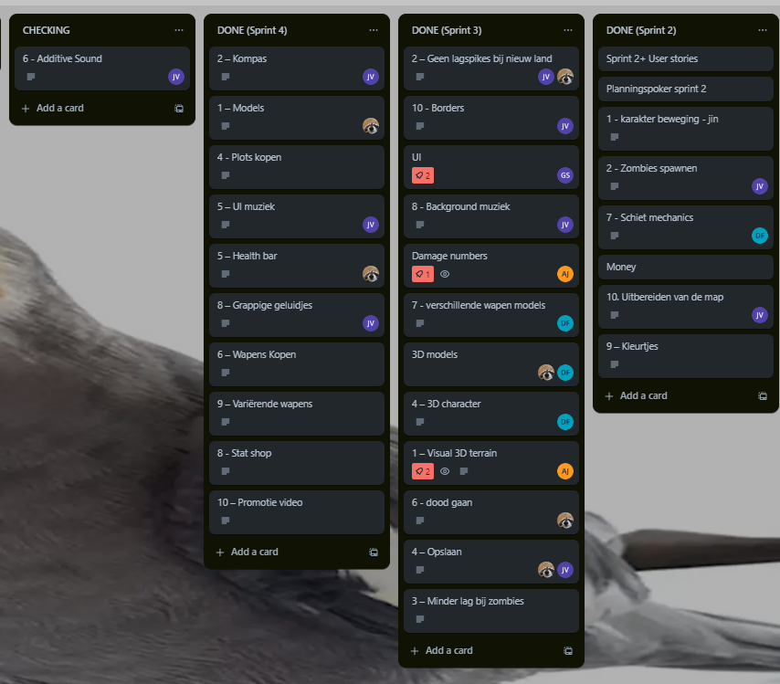
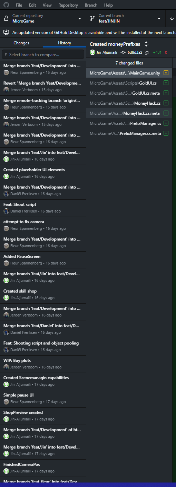

Project Zomboolean was a 4 week long project that was aimed for young teens and created using the Unity engine, it's an interactive top down shooting game where your choices matter, from equipping different weapons, upgrading your skills, and buying more land to slay all the evil zombies
This project was not possible without the controbution of all people involved.
to communicate and plan our work we used a combination of written and vocal standUps, and had an end of day meeting everyday that refined our vision and made us set clear short and long term goals for the project, during the project month we gave eachother feedback, and set improvement plans for the group as a whole
We used SCRUM insensivly, using trello, meetings, and revisions each week based on the SCRUM way of teamwork,
We also used github to work together and seemlessly work our way from brain storming, to designing and finally into production, it helped us keep track of all the changes and back track to solve the challeneges we faced!
I worked on the TGDD, which set the foundation for our theme, genre, game mechanics and in part the UI design I researched the plane purchasing mechanic and presented it to my group